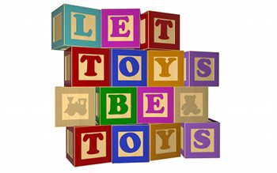
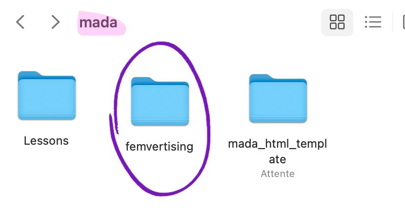
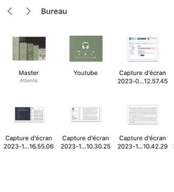
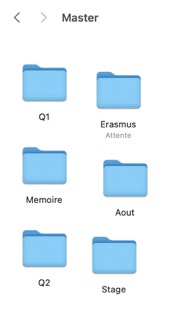
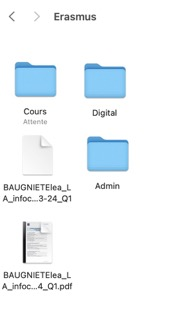
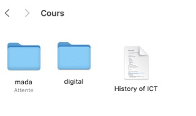
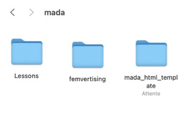
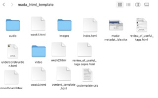

These are my ideas of subject :
Finally, I choose femvertising because it's my thesis subject in my home university. But I wanted to look at it from a different angle. This is the reason why I took the question : "is this advertising sexist or feminist ?"
After my feedback, I was asked to refine my subject as feminist advertising can be vague. So I decided to focus on children's toy advertising. The clichés of sexist toy shops persist and highlighting how to recognise feminist advertising could help parents to eradicate sexism from childhood.
A campaign highlights the problem of gendered toys and the importance of creating inclusive toys. The name of the campaign is Let toys be toys
The main question is : "is this advert feminist ?" In fact, I'm going to ask people to find out whether they can recognise a feminist ad or not.
Some people tought that femvertising is a recent phenomenon. But it's not the case even if "femvertising" is a recent term. It's why, I'll use advertising from differents period. To find the good sources, there are the boolean operators I used : Feminism AND advertising, Feminist AND advertising, femwashing, fake AND femvertising, vintage AND female AND advertising, vintage AND feministe AND advertsing. Finally there are some sources who look important for me.
I also looked for sources that focused solely on children's toy advertising and its repercussions. I always tried to find documents related to feminism and gender.
I'm going to use the sources in my explanations and definitions of feminist and non-feminist advertising. I can't afford to give a subjective opinion on this kind of subject. The sources will allow me to analyse the qualities of a feminist ad but also to explain to visitors why it's important to give them interest.
I created a folder in my computer to keep the all document
In this folder is a Word document containing my entire bibliography. You can also find this document below.
Here is the location of the file. As stated in the instructions, organisation is important. Even more so when working for HTML.
     I'm not very confident with coding. I've used it in the past, but only with Python, to do a Twitter analysis study. So this will be the first time I've created a website. So I'm very happy to have the template that I'm using as a basis for building my portfolio.